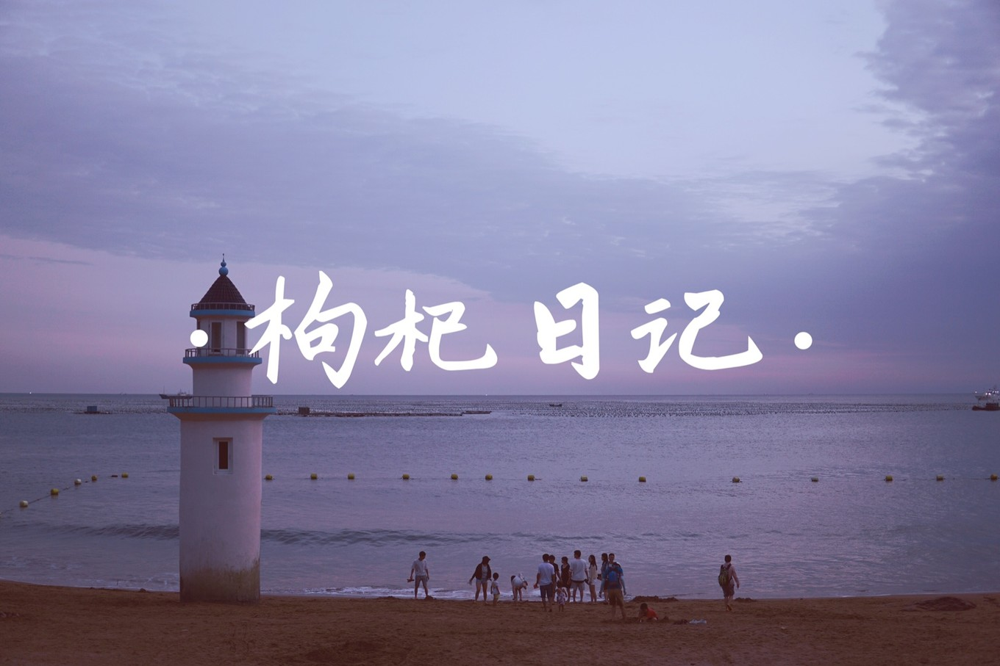
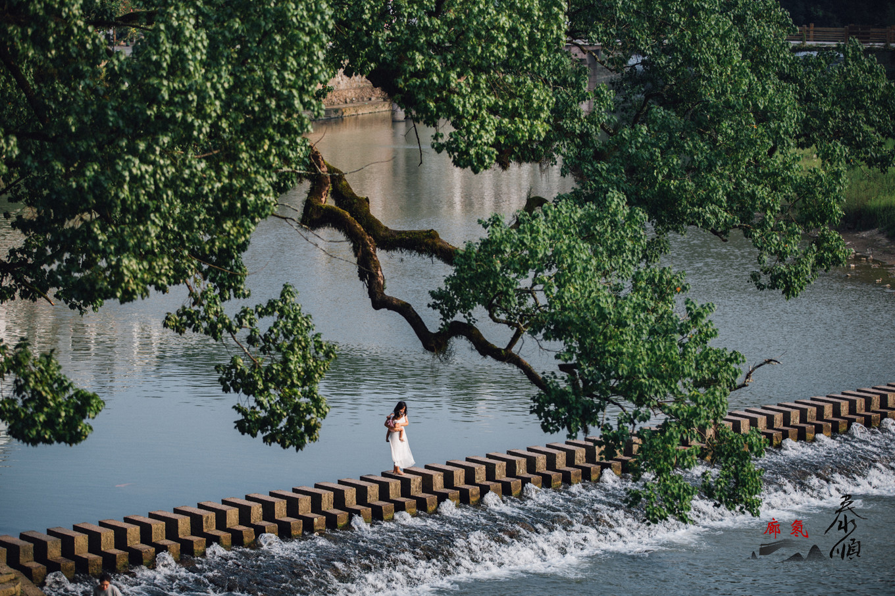

“枸杞”日记 | 躲进隐世海岛，做一场告别的白日梦！
我不会游泳，却格外喜欢海。特别是看了是枝裕和的《海街日记》后，内心的这 份喜欢愈演愈烈。为了告别今年的夏天，我和朋友们计划逃离都市，一起去海边 ，吹海风、听海浪、等日出、追日落。任发丝凌乱地拂过脸颊，海浪轻柔地拍击 脚面，空气中只留下或甜 或咸的清爽。即便烈日灼灼，大海永远也能读懂夏天 的温柔。伴着海浪声入睡，连梦话都格外的甜。

浙南秘境：泰顺 | 与时间对话，在自然中重启
与我们而言，最悠然的时刻莫过于“在路上”。去往山间，去往森林，去往历史 感浓郁到可以混淆时空的地方，去往温馨又精致的“另一处家”，去尽情享用健 康美食和“空气维生素”，去安静的地方休养生息自我重启。而泰顺 ，似乎满 足了我们想要的这一切。